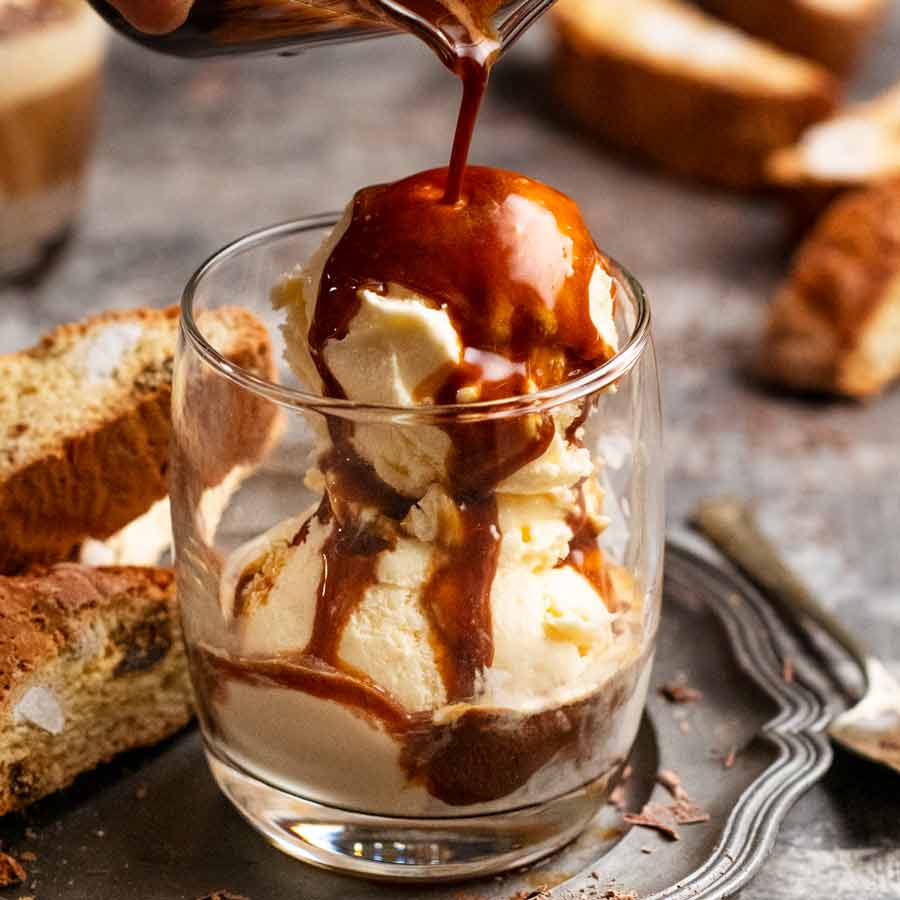

From the mid-19th century, the Pharisäer and the Fiaker were served in Viennese coffee houses; both were coffee cocktails served in glass, topped with whipped cream. The former was also known in northern Germany and Denmark around that time. Around 1900, the coffee cocktail menu in the Viennese cafés also included Kaisermelange, Maria Theresia, and a handful of other variations on the theme
ORDER HERE

Cold brew coffee originated in Japan, where it has been a traditional method of coffee brewing for centuries.[4] Slow-drip cold brew, also known as Kyoto-style,[5] or as Dutch coffee in East Asia (after the name of coffee essences brought to Asia by the Dutch),[6] refers to a process in which water is dripped through coffee grounds at room temperature over the course of many hours.It takes up to 6 minutes at 98 °C (208 °F).
ORDER HERE

Cafes in Italy categorize the affogato as a dessert,in Italy . Whether a dessert or beverage, restaurants and cafes usually serve the affogato in a tall narrowing glass, allowing the fior di latte,vanilla gelato,or ice cream to melt and combine with espresso into the hollowed space in the bottom of the glass.Affogati are often enjoyed as a post-meal coffee dessert combo eaten with a spoon and/or drunk with a straw
ORDER HERE
About Us
Coffee is a beverage brewed from roasted coffee beans. Darkly colored, bitter, and slightly acidic, coffee has a stimulating effect on humans, primarily due to its caffeine content. It has the highest sales in the world market for hot drinks.
The seeds of the Coffea plant's fruits are separated to produce unroasted green coffee beans. The beans are roasted and then ground into fine particles typically steeped in hot water before being filtered out, producing a cup of coffee. It is usually served hot, although chilled or iced coffee is common. Coffee can be prepared and presented in a variety of ways (e.g., espresso, French press, caffè latte, or already-brewed canned coffee). Sugar, sugar substitutes, milk, and cream are often added to mask the bitter taste or enhance the flavor.
Contact Us
+91 9000566777
css@gmail.com
Coffee Hub is a haven for coffee enthusiasts seeking a touch of luxury at affordable prices. Our chic and inviting atmosphere combines with a dedication to crafting the finest coffee experiences. Savor the richness of our meticulously sourced beans, roasted to perfection, and brewed with precision. From velvety lattes to robust espressos, every cup is a symphony of flavor. Our commitment to affordability ensures that everyone can indulge in the opulence of premium coffee without breaking the bank. Immerse yourself in the aroma of excellence at Coffee Hub, where luxury and affordability seamlessly blend to redefine your coffee rendezvous.